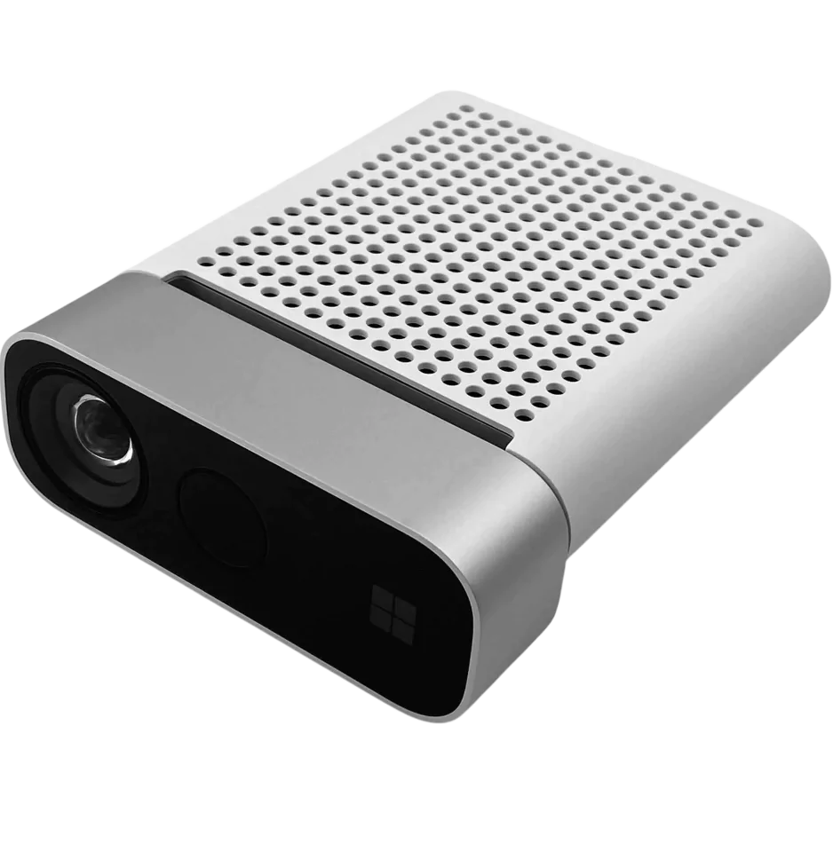

视觉文档
首页
正在初始化搜索引擎
NPU-Home/vision-docs
首页
模块
脚本
记录
讨论
规范
关于

视觉技术文档
·
·
·
开始查看文档
查看记录博客
基地网站
基地官网：NPU-舞蹈机器人基地
家政组软件仓库：NPU-Home
文档仓库
文档仓库：vision-docs
网站源代码：vision-docs-site
视觉文档
NPU-Home/vision-docs
首页
模块
模块
YOLO目标检测模块
姿势识别模块
指向手势识别模块
手势识别模块
人脸朝向识别模块
人脸识别模块
脚本
脚本
YOLO 目标检测模型训练
记录
记录
时间线
时间线
三月 2025
九月 2024
七月 2024
四月 2024
讨论
规范
关于
回到页面顶部